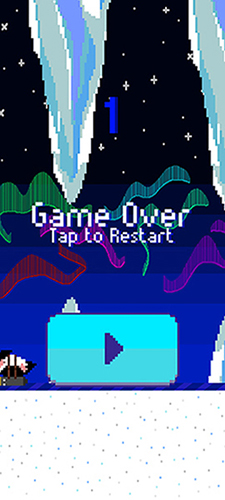
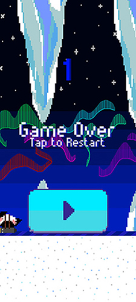

[WORK IN PROGRESS FOR THIS WEBSITE] My main task for my summer 2022 internship working for Partie was to create a Windows application version of
Partie's website using my present Unity knowledge. I took it a step further and made it in 3D as both a challenge to myself, and knowing that Unity's 3D space can easily be ported into VR, allowing for hypothetical Metaverse capabilities. I had to do this by using their API and creating Unity C# Post/Get requests.
Regardless, with the time I had, this application currently displays a "feed" from their website, and you can use horizontal movement keys to move the character through the feed. It will infinitely load and will always load the most updated posts.
You can view the prototype application via WebGL here.


 
